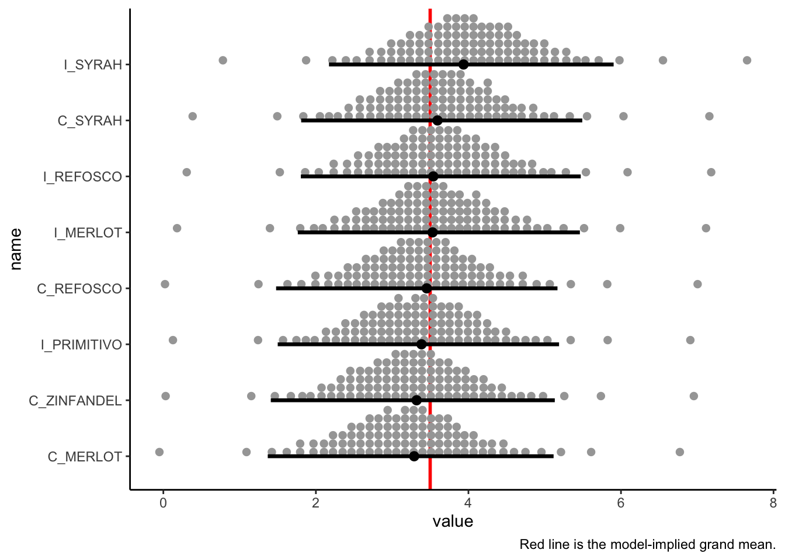
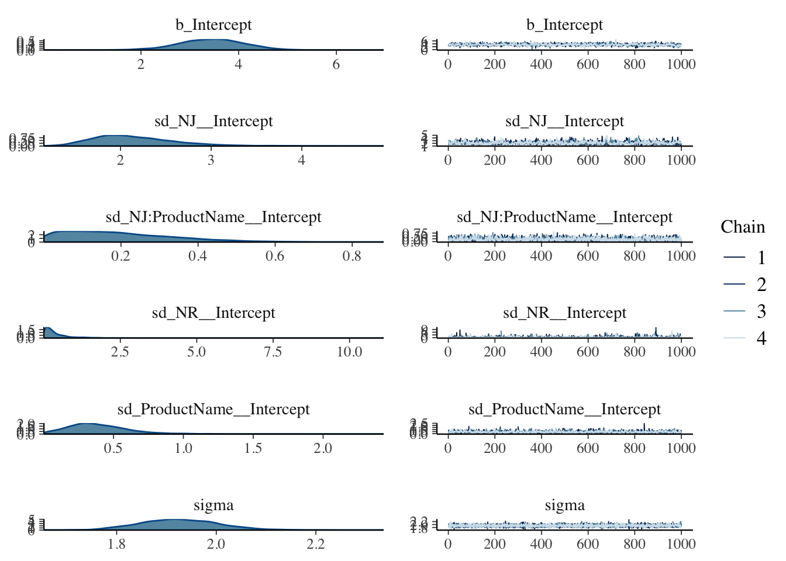

Chapter 2 Analysis of Variance
So far we’ve imported and inspected our data. In case that got left behind, let’s do it again (as well as setting up the basic packages we’re going to use).
library(tidyverse)
library(here)
descriptive_data <- read_csv(here("data/torriDAFinal.csv"))
consumer_data <- read_csv(here("data/torriconsFinal.csv"))2.1 Univariate analysis with the linear model
In the original R Opus, HGH made sure that the classifying variables in the descriptive_data were set to the factor data type. There is a looong history of factors in R, and you can get a better crash course than I am going to give in some introductory course like Stat545. Suffice it to say here that the factor data type is a labeled integer, and that it is used to be the default way that R imports strings. It has some desirable characteristics, but it can often be non-intuitive for those learning R. Much of base R has now evolved to silently handle character data as factor when necessary, so unless you’re a hardcore R user you probably don’t need to worry about this too much.
That being said, let’s take the opportunity to follow along with HGH’s intentions in order to learn some more data wrangling. In this case, HGH says that the NJ, NR, and ProductName variables in descriptive_data should be factor data type, so let’s make it so (this is definitely a good idea for NJ and NR, which are stored as numerals, as otherwise R will treat them as continuous numeric variables).
descriptive_data <-
descriptive_data %>%
mutate(NJ = as.factor(NJ),
NR = as.factor(NR),
ProductName = as.factor(ProductName))
glimpse(descriptive_data)## Rows: 336
## Columns: 23
## $ NJ <fct> 1331, 1331, 1331, 1331, 1331, 1331, 1331, 1331, 1400, …
## $ ProductName <fct> C_MERLOT, C_SYRAH, C_ZINFANDEL, C_REFOSCO, I_MERLOT, I…
## $ NR <fct> 7, 7, 7, 7, 7, 7, 7, 7, 7, 7, 7, 7, 7, 7, 7, 7, 7, 7, …
## $ Red_berry <dbl> 5.1, 5.6, 4.9, 5.0, 3.3, 5.7, 2.9, 3.2, 0.1, 1.6, 4.5,…
## $ Dark_berry <dbl> 5.8, 1.9, 2.6, 1.9, 7.2, 3.6, 5.1, 6.0, 0.1, 0.7, 2.9,…
## $ Jam <dbl> 2.1, 3.9, 1.4, 7.8, 0.5, 8.7, 8.7, 4.0, 0.2, 0.0, 0.3,…
## $ Dried_fruit <dbl> 4.7, 1.2, 5.9, 0.6, 5.8, 1.9, 0.4, 0.7, 2.9, 6.4, 2.4,…
## $ Artificial_frui <dbl> 1.0, 7.9, 0.8, 6.6, 0.7, 7.4, 6.2, 4.1, 0.1, 0.1, 0.1,…
## $ Chocolate <dbl> 2.9, 1.0, 2.0, 6.4, 2.1, 3.3, 3.4, 3.6, 0.2, 1.0, 0.2,…
## $ Vanilla <dbl> 5.0, 8.3, 2.7, 5.5, 1.3, 6.9, 8.1, 4.8, 2.0, 0.8, 1.9,…
## $ Oak <dbl> 5.0, 2.3, 5.6, 3.6, 2.1, 1.5, 1.8, 2.6, 3.0, 5.4, 6.1,…
## $ Burned <dbl> 1.4, 1.8, 1.9, 3.2, 5.6, 0.2, 0.4, 4.7, 7.5, 5.1, 0.3,…
## $ Leather <dbl> 2.3, 3.5, 4.3, 0.3, 6.5, 1.5, 4.1, 6.5, 0.7, 0.8, 0.2,…
## $ Earthy <dbl> 0.6, 1.0, 0.6, 0.2, 4.7, 0.3, 0.5, 1.9, 0.7, 3.0, 1.3,…
## $ Spicy <dbl> 3.2, 0.7, 1.4, 2.9, 0.7, 3.1, 0.7, 1.4, 0.3, 3.2, 3.1,…
## $ Pepper <dbl> 5.4, 3.0, 4.1, 0.9, 2.8, 1.6, 3.6, 4.5, 0.1, 2.0, 0.9,…
## $ Grassy <dbl> 2.1, 0.6, 3.6, 1.8, 3.8, 0.9, 2.3, 0.8, 0.1, 1.3, 0.4,…
## $ Medicinal <dbl> 0.4, 2.2, 1.7, 0.2, 2.6, 0.5, 0.2, 3.8, 0.1, 2.1, 0.1,…
## $ `Band-aid` <dbl> 0.4, 0.4, 0.1, 0.2, 5.1, 1.2, 0.2, 6.2, 0.1, 1.1, 0.1,…
## $ Sour <dbl> 5.0, 9.7, 7.8, 8.3, 7.6, 7.2, 5.9, 6.3, 5.7, 6.4, 5.4,…
## $ Bitter <dbl> 5.9, 5.2, 3.5, 3.0, 1.9, 9.8, 2.9, 0.2, 0.6, 2.9, 0.1,…
## $ Alcohol <dbl> 9.0, 7.2, 4.7, 8.9, 2.8, 8.7, 1.6, 7.0, 1.6, 5.4, 4.9,…
## $ Astringent <dbl> 8.7, 8.3, 5.0, 7.8, 5.9, 8.0, 2.6, 4.2, 5.5, 5.1, 5.9,…Great. We got it. Now, when we do something like regression (with lm()) or ANOVA (with aov()) using those variables as predictors, R will treat them as discrete, unordered levels rather than the numbers that they are encoded as.
The other trick that HGH does in her original R Opus is to run linear models on a matrix of outcomes. We’re going to take a slightly different approach using the “split-apply-combine” approach that the nest() function gives us access to in dplyr.
# First, we will retidy our data
descriptive_data_tidy <-
descriptive_data %>%
pivot_longer(cols = -c(NJ, NR, ProductName),
names_to = "descriptor",
values_to = "rating")
nested_AOV_res <-
descriptive_data_tidy %>%
nest(data = -descriptor) %>%
mutate(anova_res = map(.x = data,
.f = ~aov(rating ~ (NJ + ProductName + NR)^2, data = .x)))This functional programming is rather advanced, so let me walk through what we did:
- We used
nest()to make a bunch of sub-tables, each of which contained the data only for a single descriptor rating. We have a table forRed_berry, a table forJam, and so on. - We used
mutate()to make a new column to store our ANOVA results in, which we created through the use ofmap(), as discussed below: - We used
map()to take each of the nested subtables, now calleddata, and pass it to theaov()function. This works because each ANOVA model has the exact same formula:rating ~ (NJ + ProductName + NR)^2. InRformula syntax, this means we are modeling the variability inratingas a the outcome of judge (NJ), wine (ProductName), and rep (NR) for each individual descriptor. The “one-sided~” syntax we use in the.f =line defines this function, which is then applied to each of the nested subtables we built in the previous step. By tidying the data, we are able to do this in this succinct but somewhat intimidating syntax. “Split, apply, combine.”
This whole workflow is based on Hadley Wickham’s work, and you can find more details here. The outcome is a “tibble of tibbles”, taking advantage of the fact that R lets us store arbitrary data into the cells of a tibble object.
## # A tibble: 20 × 3
## descriptor data anova_res
## <chr> <list> <list>
## 1 Red_berry <tibble [336 × 4]> <aov>
## 2 Dark_berry <tibble [336 × 4]> <aov>
## 3 Jam <tibble [336 × 4]> <aov>
## 4 Dried_fruit <tibble [336 × 4]> <aov>
## 5 Artificial_frui <tibble [336 × 4]> <aov>
## 6 Chocolate <tibble [336 × 4]> <aov>
## 7 Vanilla <tibble [336 × 4]> <aov>
## 8 Oak <tibble [336 × 4]> <aov>
## 9 Burned <tibble [336 × 4]> <aov>
## 10 Leather <tibble [336 × 4]> <aov>
## 11 Earthy <tibble [336 × 4]> <aov>
## 12 Spicy <tibble [336 × 4]> <aov>
## 13 Pepper <tibble [336 × 4]> <aov>
## 14 Grassy <tibble [336 × 4]> <aov>
## 15 Medicinal <tibble [336 × 4]> <aov>
## 16 Band-aid <tibble [336 × 4]> <aov>
## 17 Sour <tibble [336 × 4]> <aov>
## 18 Bitter <tibble [336 × 4]> <aov>
## 19 Alcohol <tibble [336 × 4]> <aov>
## 20 Astringent <tibble [336 × 4]> <aov>If we dig into this structure, we can see that we’re creating, in parallel, a bunch of model fits:
## Call:
## aov(formula = rating ~ (NJ + ProductName + NR)^2, data = .x)
##
## Terms:
## NJ ProductName NR NJ:ProductName NJ:NR
## Sum of Squares 597.8637 73.1578 2.8577 659.0318 97.1707
## Deg. of Freedom 13 7 2 91 26
## ProductName:NR Residuals
## Sum of Squares 52.2499 652.8217
## Deg. of Freedom 14 182
##
## Residual standard error: 1.89392
## Estimated effects may be unbalancedWe can continue to use map() to get summaries from these models. We use the broom::tidy() function in order to get the same results as the typical summary() function, but in a manipulable tibble/data.frame object instead of in a summary object.
da_aov_res <-
nested_AOV_res %>%
mutate(aov_summaries = map(.x = anova_res,
.f = ~broom::tidy(.x))) %>%
# unnest() does the reverse of nest(): it takes a nested subtable and expands it
# back into the data frame, duplicating all of the classifying variables
# necessary to uniquely identify it.
unnest(aov_summaries) %>%
select(-data, -anova_res)
da_aov_res## # A tibble: 140 × 7
## descriptor term df sumsq meansq statistic p.value
## <chr> <chr> <dbl> <dbl> <dbl> <dbl> <dbl>
## 1 Red_berry NJ 13 598. 46.0 12.8 9.35e-20
## 2 Red_berry ProductName 7 73.2 10.5 2.91 6.52e- 3
## 3 Red_berry NR 2 2.86 1.43 0.398 6.72e- 1
## 4 Red_berry NJ:ProductName 91 659. 7.24 2.02 3.18e- 5
## 5 Red_berry NJ:NR 26 97.2 3.74 1.04 4.16e- 1
## 6 Red_berry ProductName:NR 14 52.2 3.73 1.04 4.15e- 1
## 7 Red_berry Residuals 182 653. 3.59 NA NA
## 8 Dark_berry NJ 13 813. 62.5 15.5 2.50e-23
## 9 Dark_berry ProductName 7 126. 18.0 4.47 1.28e- 4
## 10 Dark_berry NR 2 18.9 9.47 2.35 9.81e- 2
## # ℹ 130 more rowsWe now have a table of all of the model results for running a 3-way ANOVA with two-way interactions on each of the individual sensory descriptors. We can use this format to easily look for results that are significant. For example, let’s filter down to only rows where the model term represents variation from the wine (e.g., ProductName), and there is what is typically described as a signficant p-value (i.e., \(p<0.05\)).
naive_significance <-
da_aov_res %>%
filter(term == "ProductName",
p.value < 0.05) %>%
select(descriptor, p.value)
naive_significance## # A tibble: 17 × 2
## descriptor p.value
## <chr> <dbl>
## 1 Red_berry 6.52e- 3
## 2 Dark_berry 1.28e- 4
## 3 Jam 7.02e-16
## 4 Artificial_frui 3.23e-11
## 5 Chocolate 4.88e- 6
## 6 Vanilla 1.58e- 6
## 7 Oak 1.58e- 4
## 8 Burned 2.65e-26
## 9 Leather 6.56e- 9
## 10 Earthy 3.77e- 4
## 11 Pepper 7.55e- 3
## 12 Grassy 5.14e- 3
## 13 Medicinal 2.67e-11
## 14 Band-aid 2.77e-11
## 15 Sour 6.02e- 3
## 16 Bitter 8.07e- 3
## 17 Alcohol 1.91e- 4We see that there are 17 descriptors that fit this criteria! For these descriptors, ratings vary significantly for different wines.
2.2 Pseudo-mixed ANOVA
In the original R Opus, HGH promotes the use of “pseudo-mixed” ANOVA in order to account for added variability from lack of judge consistency. Specifically, we will see that several of our models show significant interaction terms between wines and judges or wines and replicates. Let’s find these products:
## # A tibble: 20 × 7
## descriptor term df sumsq meansq statistic p.value
## <chr> <chr> <dbl> <dbl> <dbl> <dbl> <dbl>
## 1 Red_berry NJ:ProductName 91 659. 7.24 2.02 3.18e- 5
## 2 Dark_berry NJ:ProductName 91 704. 7.73 1.92 1.04e- 4
## 3 Jam NJ:ProductName 91 480. 5.27 2.04 2.38e- 5
## 4 Jam ProductName:NR 14 64.0 4.57 1.77 4.60e- 2
## 5 Dried_fruit NJ:ProductName 91 346. 3.80 1.54 7.17e- 3
## 6 Artificial_frui NJ:ProductName 91 369. 4.05 2.14 7.71e- 6
## 7 Chocolate NJ:ProductName 91 207. 2.28 2.00 4.12e- 5
## 8 Vanilla NJ:ProductName 91 334. 3.67 2.09 1.33e- 5
## 9 Oak NJ:ProductName 91 273. 3.00 1.67 1.74e- 3
## 10 Burned NJ:ProductName 91 543. 5.97 4.18 1.21e-16
## 11 Burned ProductName:NR 14 39.8 2.84 1.99 2.07e- 2
## 12 Leather NJ:ProductName 91 338. 3.71 2.50 8.27e- 8
## 13 Earthy NJ:ProductName 91 169. 1.86 1.76 6.46e- 4
## 14 Spicy NJ:ProductName 91 232. 2.55 2.18 4.33e- 6
## 15 Pepper NJ:ProductName 91 267. 2.94 1.64 2.46e- 3
## 16 Grassy NJ:ProductName 91 198. 2.18 2.11 1.00e- 5
## 17 Medicinal NJ:ProductName 91 366. 4.03 2.07 1.63e- 5
## 18 Medicinal ProductName:NR 14 50.3 3.60 1.85 3.42e- 2
## 19 Band-aid NJ:ProductName 91 395. 4.34 2.74 4.04e- 9
## 20 Sour NJ:ProductName 91 390. 4.29 1.61 3.43e- 3For these descriptors, the amount of variance explained by the interaction between the judge and the wine (NJ:ProductName) or the wine and the rep (ProductName:Rep) is significantly larger than the residual variation. But these interactions themselves are an undesirable source of variation: different judges are using these descriptors differently on the same wines, or descriptors are being used differently on the same wines in different reps!
The pseudo-mixed model is a conservative approach to accounting for this extra, undesirable error. Without getting too into the weeds on the linear model, the basic intution is that, since these interactions, which represents undesirable variability, are significantly larger than the error term for each of these 5 descriptors, we will substitute the interaction in our normal linear model for the error term when calculating and evaluating our F-statistic, which as you may recall is the ratio of variance from a known source (in this case our wines, ProductName) and the error variance.
How are we going to do this? With some good, old-fashioned functional programming:
get_pseudomixed_results <- function(aov_res){
# The relevant ANOVA results for NJ:ProductName are in the 4th row
product_by_judge <- aov_res[4, ]
# The relevant ANOVA results for ProductName:NR are in the 6th row
product_by_rep <- aov_res[6, ]
# The relevant main effect for ProductName
product_effect <- aov_res[2, ]
# If neither of the interactions is significant,
if(product_by_judge$p.value > 0.05 & product_by_rep$p.value > 0.05){
return(tibble(sig_effect = product_effect$term,
f_stat = product_effect$statistic,
df_error = aov_res$df[7],
p_val = product_effect$p.value))
}
if(product_by_judge$p.value < product_by_rep$p.value){
return(tibble(sig_effect = product_by_judge$term,
f_stat = product_effect$meansq / product_by_judge$meansq,
df_error = product_by_judge$df,
p_val = 1 - pf(q = f_stat, df1 = product_effect$df, df2 = df_error)))
}else{
return(tibble(sig_effect = product_by_rep$term,
f_stat = product_effect$meansq / product_by_rep$meansq,
df_error = product_by_rep$df,
p_val = 1- pf(q = f_stat, df1 = product_effect$df, df2 = df_error)))
}
}
da_aov_res %>%
filter(descriptor == "Red_berry") %>%
get_pseudomixed_results()## # A tibble: 1 × 4
## sig_effect f_stat df_error p_val
## <chr> <dbl> <dbl> <dbl>
## 1 NJ:ProductName 1.44 91 0.198This function will take a tibble of 3-way ANOVA results from our analysis, look at the relevant interactions, and, if they are large enough, run a pseudomixed analysis. If both of the interactions are significant it will test the largest (most significant) interaction as the one to examine. It will then return the results of that modified, pseudomixed ANOVA in a nice table that tells us the relevant details: what effect was tested, the F-statistic and degrees of freedom for the denominator (the numerator degrees of freedom will remain the same), and the new p-value.
In the case of Red_berry above, the NJ:ProductName interaction is the most significant, and results in a non-significant pseudomixed test.
NB: Because I used numeric indexing (e.g., aov_res[6, ]) to write this function “quick and dirty”, it would need to be modified if I had a different linear model defined for my ANOVA (the model specified as rating ~ (NJ + ProductName + NR)^2 in my aov() call above), or even if I reordered the terms in that model.
We use the same split-apply-combine workflow with nest() and map() to first make subtables for each of our descriptors’ original ANOVA results, and then run our new function on them.
da_aov_res %>%
nest(data = -descriptor) %>%
mutate(pseudomixed_res = map(data, ~get_pseudomixed_results(.x))) %>%
unnest(pseudomixed_res) %>%
filter(p_val < 0.05)## # A tibble: 13 × 6
## descriptor data sig_effect f_stat df_error p_val
## <chr> <list> <chr> <dbl> <dbl> <dbl>
## 1 Dark_berry <tibble [7 × 6]> NJ:ProductName 2.33 91 0.0311
## 2 Jam <tibble [7 × 6]> NJ:ProductName 7.60 91 0.000000336
## 3 Artificial_frui <tibble [7 × 6]> NJ:ProductName 4.99 91 0.0000819
## 4 Chocolate <tibble [7 × 6]> NJ:ProductName 2.88 91 0.00912
## 5 Vanilla <tibble [7 × 6]> NJ:ProductName 2.97 91 0.00753
## 6 Oak <tibble [7 × 6]> NJ:ProductName 2.62 91 0.0163
## 7 Burned <tibble [7 × 6]> NJ:ProductName 6.83 91 0.00000162
## 8 Leather <tibble [7 × 6]> NJ:ProductName 3.37 91 0.00306
## 9 Earthy <tibble [7 × 6]> NJ:ProductName 2.30 91 0.0335
## 10 Medicinal <tibble [7 × 6]> NJ:ProductName 5.18 91 0.0000544
## 11 Band-aid <tibble [7 × 6]> NJ:ProductName 3.91 91 0.000899
## 12 Bitter <tibble [7 × 6]> ProductName 2.83 182 0.00807
## 13 Alcohol <tibble [7 × 6]> ProductName 4.32 182 0.000191From these results, we see that almost all of our products have significant interactions, and that we’ve lost a few significant descriptors: we’re down to 13/20 being significant, from 17/20 from our naive evaluation. Furthermore, when we had significant interactions, they were all wine-by-judge interactions: believe it or not, this is good news. As noted by Brockhoff, Schlich, and Skovgaard (2015), even trained judges are almost never aligned in scale use, so the pseudomixed model is good insurance against this variability. A larger wine-by-rep interaction would be more concerning: it would indicate that the product may have changed in a particular presentation (perhaps it was exposed to oxygen?), and this would warrant a reconsideration of the results.
2.3 Mean comparison (post-hoc testing)
In the original R Opus, HGH demonstrates how to calculate Fisher’s Least Significant Difference (Fisher’s LSD), but I discourage the use of this test, even though it is arguable that the significant ANOVA result means that there is some protection against familywise error Rencher (2002) The Tukey’s Honestly Significant Difference (HSD) is probably preferable, and as a reviewer I push authors to use this test.
We’re going to go back to our nested_AOV_res object because we don’t need the sum-of-squares/ANOVA table output, we need the actual model fit results. HGH uses the agricolae package’s HSD.test() function, and we’re going to wrap that up in a convenience function to let us easily capture the results and drop them into a tibble for easy access and plotting.
library(agricolae)
tidy_hsd <- function(anova_res, treatment = "ProductName"){
hsd_res <- HSD.test(anova_res, trt = treatment)
return(
hsd_res$means %>%
as_tibble(rownames = "wine") %>%
left_join(hsd_res$groups %>%
as_tibble(rownames = "wine")) %>%
arrange(groups)
)
}
# We can test this on the Red_berry descriptor
nested_AOV_res$anova_res[[1]] %>%
tidy_hsd()## Joining with `by = join_by(wine, rating)`## # A tibble: 8 × 11
## wine rating std r se Min Max Q25 Q50 Q75 groups
## <chr> <dbl> <dbl> <int> <dbl> <dbl> <dbl> <dbl> <dbl> <dbl> <chr>
## 1 I_PRIMITIVO 3.85 2.96 42 0.292 0 9.2 1.42 3.1 6.2 a
## 2 C_ZINFANDEL 3.08 2.37 42 0.292 0 8.2 0.725 2.85 4.9 ab
## 3 I_MERLOT 2.79 2.55 42 0.292 0 8 0.5 2.6 4.92 ab
## 4 I_SYRAH 3.17 2.59 42 0.292 0 8.6 1.25 2.45 5.5 ab
## 5 C_MERLOT 2.46 2.39 42 0.292 0 8 0.5 1.6 4.3 b
## 6 C_REFOSCO 2.47 2.30 42 0.292 0 7 0.325 1.8 4.35 b
## 7 C_SYRAH 2.46 2.48 42 0.292 0 8.6 0.5 1.6 3.35 b
## 8 I_REFOSCO 2.48 2.36 42 0.292 0 7.7 0.425 2.1 3.58 bNB, again: Once again I have written this function to be quick and dirty–I have hardcoded some of the information about the structure of our analysis into the function, so if we change how our aov() is fit or our column names are defined, this will no longer work.
This function returns a nice table of our wines arranged by their group membership in an HSD test. We can use this to get mean separations for all of our significant attributes with a bit of data wrangling.
# First, we'll get a list of significant descriptors from pseudomixed ANOVA
significant_descriptors <-
da_aov_res %>%
nest(data = -descriptor) %>%
mutate(pseudomixed_res = map(data, ~get_pseudomixed_results(.x))) %>%
unnest(pseudomixed_res) %>%
filter(p_val < 0.05) %>%
pull(descriptor)
# Then we'll take our original models and only run HSD on the significant ones
hsd_tbl <-
nested_AOV_res %>%
filter(descriptor %in% significant_descriptors) %>%
mutate(hsd_res = map(anova_res, ~tidy_hsd(.x))) %>%
select(-data, -anova_res) %>%
unnest(hsd_res)
hsd_tbl## # A tibble: 104 × 12
## descriptor wine rating std r se Min Max Q25 Q50 Q75
## <chr> <chr> <dbl> <dbl> <int> <dbl> <dbl> <dbl> <dbl> <dbl> <dbl>
## 1 Dark_berry I_SYRAH 4.48 3.24 42 0.310 0 9.9 1.58 4.1 7.82
## 2 Dark_berry I_PRIMITIVO 3.38 3.03 42 0.310 0 9.6 0.55 2.8 5.38
## 3 Dark_berry C_MERLOT 3.05 2.60 42 0.310 0 8.3 0.65 2.3 5.08
## 4 Dark_berry C_REFOSCO 2.46 2.48 42 0.310 0 8.6 0.4 1.7 4.22
## 5 Dark_berry C_SYRAH 2.93 2.91 42 0.310 0 8.9 0.7 2.05 4.15
## 6 Dark_berry C_ZINFANDEL 3.06 2.68 42 0.310 0 9.2 0.75 2.6 4.7
## 7 Dark_berry I_MERLOT 2.35 2.21 42 0.310 0 7.2 0.325 1.65 4.12
## 8 Dark_berry I_REFOSCO 3.01 2.36 42 0.310 0 8.5 1.1 2.4 5.02
## 9 Jam I_PRIMITIVO 3.61 3.08 42 0.248 0 9.8 0.95 2.5 6.35
## 10 Jam I_SYRAH 3.10 2.93 42 0.248 0 9.5 0.475 1.9 5.15
## # ℹ 94 more rows
## # ℹ 1 more variable: groups <chr>Again, using the same split-apply-combine workflow (but we started with an already nested table), we get a set of results suitable for reporting in a paper or plotting. Let’s take a look at how to make a basic visualization of these results using ggplot2.
library(tidytext)
hsd_tbl %>%
# Here we define a standard normal confidence interval
mutate(interval = 1.96 * (std / sqrt(r))) %>%
# Here we use the tidytext::reorder_within() function to order samples
# separately across facets, getting nice visualizations
mutate(wine = reorder_within(wine, by = rating, within = descriptor)) %>%
ggplot(aes(x = rating, y = wine, color = groups)) +
geom_point() +
geom_segment(aes(x = rating - interval,
xend = rating + interval,
y = wine, yend = wine,
color = groups),
inherit.aes = FALSE) +
scale_y_reordered() +
facet_wrap(~descriptor, ncol = 3, scales = "free") +
theme_bw() +
theme(legend.position = "top") +
labs(x = NULL) +
guides(color = guide_legend(title = "HSD group", nrow = 1))2.4 BONUS: Bayesian approaches to ANOVA
As I have worked longer in our field and with applied statistics, I’ve gotten less satisfied with “Null Hypothesis Statistics Testing” (NHST), and more interested in a general Bayesian framework. I’m not nearly expert enough to give a rigorous definition of Bayesian statistics, but the gist is that Bayesian statistics combines our prior knowledge (from theory, previous experience, observation) with data from an experiment to give us estimates about our certainty around parameters of interest. Essentially, instead of rejecting a (usually implausible) \(H_0\) as a consequence of finding data incompatible with that hypothesis, Bayesian statistics evaluates what range of parameters are compatible with observed data. This, to me, seems more of a satisfying use of statistical analysis.
Put less generally, for our observed data from subjects rating wines’ sensory attributes, we would be able to use a Bayesian approach to not just determine whether the observed means are “significantly different” (at some given level of \(\alpha\), usually \(\alpha=0.05\)), but to give plausible estimates of the underlying descriptor means for each wine. This seems worthwhile to me.
So if Bayesian statistics are so great, why isn’t everyone using them? There are two reasons (in my understanding):
- Many statisticians, particularly those influenced by Fisher, Neyman, and Pearson (generally called “Frequentists”) reject the requirement in Bayesian modeling for providing an estimate of prior knowledge, since it is based on opinion. I think this is silly, because it pretends that our experimental approach (science, writ broadly) doesn’t integrate prior, subjective knowledge with rigorous data collection. For more on this (silly) objection, consider the excellently titled The Theory That Would Not Die.
- Application of Bayes theorem requires numerical integration of complicated integrands which, without modern computational methods, was essentially impossible. Thus, even enthusiastic Bayesians couldn’t actually apply the approach to many practical problems. This barrier has been progressively broken down, as computational power has increased and better, more user-friendly tools have been developed.
Following point 2, I will be using a combination of Stan (a standalone tool for Bayesian estimation) and the R packages associated with Stan, particularly brms (“brooms”) and tidybayes, to work through this section. Their installation requires extra steps that can be found at the Stan website.
There are many, many, many excellent introductions to Bayesian statistics available, so I am not going to embarrass myself by trying to stumble through an explanation. For my own benefit, instead, I am going to try to work through an application of simple Bayesian methods to the multi-way ANOVAs we ran above. This is based on material from A. Solomon Kurz’s (2023) truly excellent walkthrough to modern R-based approaches to Bayesian modeling. Let’s see how it goes!
First, we load the extra required packages.
Then we’re going to use the approach to setting up ANOVA-like models in Stan that A. Solomon Kurz details in his excellent online companion to Kruschke’s Doing Bayesian Data Analysis Kruschke (2014).
We are first going to apply this approach to a single outcome: Bitter. We know that above we found a significant difference between Bitter ratings for the various wines. Let’s let a Bayesian approach explore that result for us.
# Let's make a less unwieldy tibble to work with
bayes_data <-
descriptive_data_tidy %>%
filter(descriptor == "Bitter")
bayes_data## # A tibble: 336 × 5
## NJ ProductName NR descriptor rating
## <fct> <fct> <fct> <chr> <dbl>
## 1 1331 C_MERLOT 7 Bitter 5.9
## 2 1331 C_SYRAH 7 Bitter 5.2
## 3 1331 C_ZINFANDEL 7 Bitter 3.5
## 4 1331 C_REFOSCO 7 Bitter 3
## 5 1331 I_MERLOT 7 Bitter 1.9
## 6 1331 I_SYRAH 7 Bitter 9.8
## 7 1331 I_PRIMITIVO 7 Bitter 2.9
## 8 1331 I_REFOSCO 7 Bitter 0.2
## 9 1400 C_MERLOT 7 Bitter 0.6
## 10 1400 C_SYRAH 7 Bitter 2.9
## # ℹ 326 more rows# and we'll store some information about our data so that we can use it in our
# brm() call later:
mean_y <- mean(bayes_data$rating)
sd_y <- sd(bayes_data$rating)Finally, we’re going to take a function from Kurz that gives parameters for a gamma distribution with a specific mode and standard deviation; to learn about why we’re doing this consult Kurz or Kruschke.
gamma_a_b_from_omega_sigma <- function(mode, sd) {
if (mode <= 0) stop("mode must be > 0")
if (sd <= 0) stop("sd must be > 0")
rate <- (mode + sqrt(mode^2 + 4 * sd^2)) / (2 * sd^2)
shape <- 1 + mode * rate
return(list(shape = shape, rate = rate))
}
shape_rate <- gamma_a_b_from_omega_sigma(mode = sd_y / 2, sd = sd_y * 2)We store all of this information into a stanvar object, which lets us send this information to Stan through brms.
stanvars <-
stanvar(mean_y, name = "mean_y") +
stanvar(sd_y, name = "sd_y") +
stanvar(shape_rate$shape, name = "alpha") +
stanvar(shape_rate$rate, name = "beta")
# If you're curious, stanvar() creates lists of named variables that can be
# passed off to Stan for processing; we could calculate these directly in our
# call to brm() but it would be messier looking and potentially more fragile
# (e.g., if we change our model and forget to change the calculation, that would
# be bad).
str(stanvars)## List of 4
## $ mean_y:List of 6
## ..$ name : chr "mean_y"
## ..$ sdata : num 3.49
## ..$ scode : chr "real mean_y;"
## ..$ block : chr "data"
## ..$ position: chr "start"
## ..$ pll_args: chr "data real mean_y"
## $ sd_y :List of 6
## ..$ name : chr "sd_y"
## ..$ sdata : num 2.76
## ..$ scode : chr "real sd_y;"
## ..$ block : chr "data"
## ..$ position: chr "start"
## ..$ pll_args: chr "data real sd_y"
## $ alpha :List of 6
## ..$ name : chr "alpha"
## ..$ sdata : num 1.28
## ..$ scode : chr "real alpha;"
## ..$ block : chr "data"
## ..$ position: chr "start"
## ..$ pll_args: chr "data real alpha"
## $ beta :List of 6
## ..$ name : chr "beta"
## ..$ sdata : num 0.205
## ..$ scode : chr "real beta;"
## ..$ block : chr "data"
## ..$ position: chr "start"
## ..$ pll_args: chr "data real beta"
## - attr(*, "class")= chr "stanvars"OK! As per usual, my attempt to explain (to myself, mostly) what I am doing is much longer than I intended! Let’s get to modeling.
We are going to develop a model that is equivalent to the 3-way ANOVA we proposed for each variable: we want to allow 2-way interactions between all main effects, as well. It will be slightly uglier because we’re going to be using syntax that is common for non-linear or repeated-effects modeling in R. To save typing, I am going to omit the interactions between NR and the other factors, as (happily) they were never large, and are not of theoretical interest.
b_bitter <-
brm(data = bayes_data,
family = gaussian,
formula = rating ~ 1 + (1 | NJ) + (1 | NR) + (1 | ProductName) + (1 | NJ:ProductName),
prior = c(prior(normal(mean_y, sd_y * 5), class = Intercept),
prior(gamma(alpha, beta), class = sd),
prior(cauchy(0, sd_y), class = sigma)),
stanvars = stanvars, seed = 2, chains = 4, cores = 4, iter = 4000,
warmup = 2000, control = list(adapt_delta = 0.999, max_treedepth = 13),
file = here("fits/fit_02_bitter"))This resulted in at least one diagnostic warning that, after inspection, seems trivial enough to ignore for now (only a few divergent transitions with good \(\hat{R}\) and \(ESS\) values), as can be seen in the summary and diagnostic plots below:
## Warning: There were 3 divergent transitions after warmup. Increasing
## adapt_delta above 0.999 may help. See
## http://mc-stan.org/misc/warnings.html#divergent-transitions-after-warmup## Family: gaussian
## Links: mu = identity; sigma = identity
## Formula: rating ~ 1 + (1 | NJ) + (1 | NR) + (1 | ProductName) + (1 | NJ:ProductName)
## Data: bayes_data (Number of observations: 336)
## Draws: 4 chains, each with iter = 4000; warmup = 2000; thin = 1;
## total post-warmup draws = 8000
##
## Group-Level Effects:
## ~NJ (Number of levels: 14)
## Estimate Est.Error l-95% CI u-95% CI Rhat Bulk_ESS Tail_ESS
## sd(Intercept) 2.21 0.50 1.49 3.42 1.00 1576 2794
##
## ~NJ:ProductName (Number of levels: 112)
## Estimate Est.Error l-95% CI u-95% CI Rhat Bulk_ESS Tail_ESS
## sd(Intercept) 0.22 0.14 0.02 0.55 1.00 3609 3932
##
## ~NR (Number of levels: 3)
## Estimate Est.Error l-95% CI u-95% CI Rhat Bulk_ESS Tail_ESS
## sd(Intercept) 0.74 1.15 0.03 4.04 1.00 2065 3155
##
## ~ProductName (Number of levels: 8)
## Estimate Est.Error l-95% CI u-95% CI Rhat Bulk_ESS Tail_ESS
## sd(Intercept) 0.42 0.23 0.07 0.97 1.00 2221 2446
##
## Population-Level Effects:
## Estimate Est.Error l-95% CI u-95% CI Rhat Bulk_ESS Tail_ESS
## Intercept 3.50 0.95 1.79 5.45 1.00 1495 2367
##
## Family Specific Parameters:
## Estimate Est.Error l-95% CI u-95% CI Rhat Bulk_ESS Tail_ESS
## sigma 1.92 0.08 1.78 2.09 1.00 8538 5282
##
## Draws were sampled using sampling(NUTS). For each parameter, Bulk_ESS
## and Tail_ESS are effective sample size measures, and Rhat is the potential
## scale reduction factor on split chains (at convergence, Rhat = 1).We can examine the actual “draws” from the joint posterior using the as_draws_df() function and doing some wrangling.
## # A draws_df: 2000 iterations, 4 chains, and 145 variables
## b_Intercept sd_NJ__Intercept sd_NJ:ProductName__Intercept sd_NR__Intercept
## 1 3.6 2.5 0.526 0.0733
## 2 2.3 2.7 0.173 0.0247
## 3 3.7 1.5 0.041 0.0055
## 4 3.3 1.6 0.107 0.1484
## 5 3.6 2.0 0.169 0.0308
## 6 3.3 2.1 0.336 0.2021
## 7 3.0 1.8 0.079 0.0586
## 8 3.2 2.0 0.312 0.4505
## 9 3.4 2.1 0.375 0.2390
## 10 4.4 1.5 0.150 1.2597
## sd_ProductName__Intercept sigma r_NJ[1331,Intercept] r_NJ[1400,Intercept]
## 1 0.30 1.9 -0.27 -1.85
## 2 0.59 2.0 0.46 -0.81
## 3 0.42 1.9 -0.55 -1.53
## 4 0.61 1.9 -0.84 -1.96
## 5 0.33 1.9 -0.72 -2.19
## 6 0.38 2.0 -0.22 -2.09
## 7 0.41 1.8 0.20 -2.08
## 8 0.27 2.1 -0.45 -1.58
## 9 0.42 1.8 -0.85 -2.63
## 10 0.82 2.0 -0.37 -2.58
## # ... with 7990 more draws, and 137 more variables
## # ... hidden reserved variables {'.chain', '.iteration', '.draw'}You’ll note that there are a lot of variables. We are estimating (as I understand it) deflections from the grand mean for all of the levels of all of our main effects. We can summarize these using the posterior_summary() function:
posterior_summary(b_bitter) %>%
as_tibble(rownames = "parameter") %>%
mutate(across(where(is.numeric), ~round(., 2)))## # A tibble: 145 × 5
## parameter Estimate Est.Error Q2.5 Q97.5
## <chr> <dbl> <dbl> <dbl> <dbl>
## 1 b_Intercept 3.5 0.95 1.79 5.45
## 2 sd_NJ__Intercept 2.21 0.5 1.49 3.42
## 3 sd_NJ:ProductName__Intercept 0.22 0.14 0.02 0.55
## 4 sd_NR__Intercept 0.74 1.15 0.03 4.04
## 5 sd_ProductName__Intercept 0.42 0.23 0.07 0.97
## 6 sigma 1.92 0.08 1.78 2.09
## 7 r_NJ[1331,Intercept] -0.44 0.72 -1.85 1.03
## 8 r_NJ[1400,Intercept] -1.78 0.73 -3.22 -0.32
## 9 r_NJ[1401,Intercept] 2.34 0.72 0.96 3.8
## 10 r_NJ[1402,Intercept] 2.31 0.72 0.92 3.74
## # ℹ 135 more rowsFor a sanity check, notice that the estimate for our grand mean (b_Intercept) is the observed value.
## [1] 3.494643nd <-
bayes_data %>%
distinct(ProductName)
# we use `re_formula` to marginalize across the other factors
f <-
fitted(b_bitter,
newdata = nd,
re_formula = ~ (1 | ProductName),
summary = FALSE) %>%
as_tibble() %>%
set_names(nd$ProductName)
# We can look at the plausible 95% HDI for each wine's rated bitterness.
f %>%
pivot_longer(everything()) %>%
mutate(name = fct(name) %>% fct_reorder(.x = value, .fun = mean)) %>%
ggplot(aes(x = value, y = name)) +
geom_vline(xintercept = fixef(b_bitter)[, 1], size = 1, color = "red") +
stat_dotsinterval(point_interval = mode_hdi, .width = 0.95, quantiles = 100) +
theme_classic() +
labs(caption = "Red line is the model-implied grand mean.")It sure looks like these wines are not easy to discriminate. One advantage of Bayesian approaches is that the paradigm of investigation allows us to investigate the posterior draws to explore things like pairwise comparisons with no need to worry about ideas like “family-wise error” (because we are not in a hypothesis-testing framework).
# Let's see if the Italian Syrah is plausibly more bitter than the Californian Merlot:
f %>%
transmute(diff = I_SYRAH - C_MERLOT) %>%
ggplot(aes(x = diff)) +
geom_rect(aes(xmin = -0.05, xmax = 0.05,
ymin = -Inf, ymax = Inf),
size = 1, fill = "pink", alpha = 1/3) +
stat_dotsinterval(point_interval = mode_hdi, .width = 0.95, quantiles = 100) +
theme_classic() +
labs(x = "Italian Syrah vs. Californian Merlot in rated bitterness",
caption = "Pink area is a [-0.05, 0.05] ROPE around 0 difference.")It looks like the posterior differences between the most-bitter and least-bitter wines don’t exclude a small “region of plausible equivalence” around 0 from the 95% area of highest posterior density, so even though there is a modal difference of around 0.75 points in bitterness between these wines, we can’t entirely dismiss the possibility that there is no difference in bitterness. That being said, there is at least as much posterior probability density around 1.5 points of bitterness difference, so it seems unreasonable to me to claim that these wines are exactly the same in their level of bitterness–it just probably isn’t that large a difference!
We also have the freedom to explore any contrasts that might be of interest. For example, we might be interested (for either exploratory data analysis based on the HDIs above or because of a priori theory) in knowing whether Italian wines are on average more bitter than California wines. We can do so simply:
f %>%
transmute(diff = (I_SYRAH + I_MERLOT + I_PRIMITIVO + I_REFOSCO) / 4 -
(C_MERLOT + C_SYRAH + C_ZINFANDEL + C_REFOSCO) / 4) %>%
ggplot(aes(x = diff)) +
geom_rect(aes(xmin = -0.05, xmax = 0.05,
ymin = -Inf, ymax = Inf),
size = 1, fill = "pink", alpha = 1/3) +
stat_dotsinterval(point_interval = mode_hdi, .width = 0.95, quantiles = 100) +
theme_classic() +
labs(x = "Italian vs. Californian wines for rated bitterness",
caption = "Pink area is a [-0.05, 0.05] ROPE around 0 difference.")
Unsurprisingly, given the figures above, we see that there is some possibility of a very small amount of overall bitterness, but we’d be pretty hesitant to make broad statements when a ROPE around 0 is so clearly within the HDI for this contrast.
Finally, for my own interest, I am curious how brms would do using defaults in fitting the same ANOVA-like model.
b_bitter_default <-
brm(data = bayes_data,
family = gaussian,
formula = rating ~ 1 + (1 | NJ) + (1 | NR) + (1 | ProductName) + (1 | NJ:ProductName),
seed = 2, chains = 4, cores = 4, control = list(adapt_delta = 0.999, max_treedepth = 13),
file = here("fits/fit_02_bitter_default"))Interestingly, this model seemed to take much less time to fit and didn’t have the issues with transitions. Let’s look at the chains and the parameter estimates.
## Family: gaussian
## Links: mu = identity; sigma = identity
## Formula: rating ~ 1 + (1 | NJ) + (1 | NR) + (1 | ProductName) + (1 | NJ:ProductName)
## Data: bayes_data (Number of observations: 336)
## Draws: 4 chains, each with iter = 2000; warmup = 1000; thin = 1;
## total post-warmup draws = 4000
##
## Group-Level Effects:
## ~NJ (Number of levels: 14)
## Estimate Est.Error l-95% CI u-95% CI Rhat Bulk_ESS Tail_ESS
## sd(Intercept) 2.16 0.48 1.45 3.31 1.01 880 1568
##
## ~NJ:ProductName (Number of levels: 112)
## Estimate Est.Error l-95% CI u-95% CI Rhat Bulk_ESS Tail_ESS
## sd(Intercept) 0.19 0.14 0.01 0.52 1.00 1335 1765
##
## ~NR (Number of levels: 3)
## Estimate Est.Error l-95% CI u-95% CI Rhat Bulk_ESS Tail_ESS
## sd(Intercept) 0.47 0.68 0.01 2.31 1.00 1116 1994
##
## ~ProductName (Number of levels: 8)
## Estimate Est.Error l-95% CI u-95% CI Rhat Bulk_ESS Tail_ESS
## sd(Intercept) 0.39 0.22 0.05 0.92 1.00 1321 1441
##
## Population-Level Effects:
## Estimate Est.Error l-95% CI u-95% CI Rhat Bulk_ESS Tail_ESS
## Intercept 3.45 0.68 2.07 4.74 1.01 914 1456
##
## Family Specific Parameters:
## Estimate Est.Error l-95% CI u-95% CI Rhat Bulk_ESS Tail_ESS
## sigma 1.93 0.08 1.78 2.08 1.00 5824 3043
##
## Draws were sampled using sampling(NUTS). For each parameter, Bulk_ESS
## and Tail_ESS are effective sample size measures, and Rhat is the potential
## scale reduction factor on split chains (at convergence, Rhat = 1).
It all looks ok, but it seems like the estimates for some parameters are a bit less precise, probably because we allowed the model to use uninformed priors. We can see how that was done using the get_prior() function on the formula and data, as so:
get_prior(formula = rating ~ 1 + (1 | NJ) + (1 | NR) + (1 | ProductName) + (1 | NJ:ProductName),
data = bayes_data)## prior class coef group resp dpar nlpar lb ub
## student_t(3, 3, 3.3) Intercept
## student_t(3, 0, 3.3) sd 0
## student_t(3, 0, 3.3) sd NJ 0
## student_t(3, 0, 3.3) sd Intercept NJ 0
## student_t(3, 0, 3.3) sd NJ:ProductName 0
## student_t(3, 0, 3.3) sd Intercept NJ:ProductName 0
## student_t(3, 0, 3.3) sd NR 0
## student_t(3, 0, 3.3) sd Intercept NR 0
## student_t(3, 0, 3.3) sd ProductName 0
## student_t(3, 0, 3.3) sd Intercept ProductName 0
## student_t(3, 0, 3.3) sigma 0
## source
## default
## default
## (vectorized)
## (vectorized)
## (vectorized)
## (vectorized)
## (vectorized)
## (vectorized)
## (vectorized)
## (vectorized)
## defaultIt looks like, by default, brm() uses very broad Student’s \(t\) priors for all the parameters; I’m no expert but I think this is what are called “uninformed priors” and so will be almost entirely influenced by the data. For example, if we compare our original fit following Kurz’s example where we use a normal distribution with mean and sd influenced by our data, we see a distinct difference in parameter estimates for the intercept:
So we lose some precision in exchange for speed. Let’s look at how the default model predicts mean separation:
nd <-
bayes_data %>%
distinct(ProductName)
# we use `re_formula` to marginalize across the other factors
f <-
fitted(b_bitter_default,
newdata = nd,
re_formula = ~ (1 | ProductName),
summary = FALSE) %>%
as_tibble() %>%
set_names(nd$ProductName)
# We can look at the plausible 95% HDI for each wine's rated bitterness.
f %>%
pivot_longer(everything()) %>%
mutate(name = fct(name) %>% fct_reorder(.x = value, .fun = mean)) %>%
ggplot(aes(x = value, y = name)) +
geom_vline(xintercept = fixef(b_bitter_default)[, 1], size = 1, color = "red") +
stat_dotsinterval(point_interval = mode_hdi, .width = 0.95, quantiles = 100) +
theme_classic() +
labs(caption = "Red line is the model-implied grand mean.",
subtitle = "The HDIs are broader with the `brms` default priors")And we can do the same kind of check with the individual differences:
# Let's see if the Italian Syrah is plausibly more bitter than the Californian Merlot:
f %>%
transmute(diff = I_SYRAH - C_MERLOT) %>%
ggplot(aes(x = diff)) +
geom_rect(aes(xmin = -0.05, xmax = 0.05,
ymin = -Inf, ymax = Inf),
size = 1, fill = "pink", alpha = 1/3) +
stat_dotsinterval(point_interval = mode_hdi, .width = 0.95, quantiles = 100) +
theme_classic() +
labs(x = "Italian Syrah vs. Californian Merlot in rated bitterness",
caption = "Pink area is a [-0.05, 0.05] ROPE around 0 difference.",
subtitle = "Our overall conclusions, however, would not change much using the defaults.")So in this case, it seems like the speed of using brms defaults, at least for exploratory data analysis, may be worthwhile.
I might try to incorporate some more Bayesian tools as we go along, as I find them very interesting. If you want to learn more about these, I recommend the sources listed above and cited in the text here.
2.5 Packages used in this chapter
## R version 4.3.1 (2023-06-16)
## Platform: aarch64-apple-darwin20 (64-bit)
## Running under: macOS Ventura 13.6.1
##
## Matrix products: default
## BLAS: /Library/Frameworks/R.framework/Versions/4.3-arm64/Resources/lib/libRblas.0.dylib
## LAPACK: /Library/Frameworks/R.framework/Versions/4.3-arm64/Resources/lib/libRlapack.dylib; LAPACK version 3.11.0
##
## locale:
## [1] en_US.UTF-8/en_US.UTF-8/en_US.UTF-8/C/en_US.UTF-8/en_US.UTF-8
##
## time zone: America/New_York
## tzcode source: internal
##
## attached base packages:
## [1] stats graphics grDevices utils datasets methods base
##
## other attached packages:
## [1] tidybayes_3.0.6 brms_2.20.1 Rcpp_1.0.11 tidytext_0.4.1
## [5] agricolae_1.3-6 here_1.0.1 lubridate_1.9.2 forcats_1.0.0
## [9] stringr_1.5.0 dplyr_1.1.2 purrr_1.0.1 readr_2.1.4
## [13] tidyr_1.3.0 tibble_3.2.1 ggplot2_3.4.3 tidyverse_2.0.0
##
## loaded via a namespace (and not attached):
## [1] tensorA_0.36.2 rstudioapi_0.15.0 jsonlite_1.8.7
## [4] magrittr_2.0.3 estimability_1.4.1 farver_2.1.1
## [7] rmarkdown_2.23 vctrs_0.6.3 base64enc_0.1-3
## [10] htmltools_0.5.6 distributional_0.3.2 haven_2.5.3
## [13] broom_1.0.5 janeaustenr_1.0.0 sass_0.4.7
## [16] StanHeaders_2.26.27 bslib_0.5.1 htmlwidgets_1.6.2
## [19] tokenizers_0.3.0 plyr_1.8.8 emmeans_1.8.7
## [22] zoo_1.8-12 cachem_1.0.8 igraph_1.5.0.1
## [25] mime_0.12 lifecycle_1.0.3 pkgconfig_2.0.3
## [28] colourpicker_1.3.0 Matrix_1.6-0 R6_2.5.1
## [31] fastmap_1.1.1 shiny_1.7.5 digest_0.6.33
## [34] klaR_1.7-2 colorspace_2.1-0 ps_1.7.5
## [37] rprojroot_2.0.3 crosstalk_1.2.0 SnowballC_0.7.1
## [40] labeling_0.4.3 fansi_1.0.4 timechange_0.2.0
## [43] abind_1.4-5 compiler_4.3.1 bit64_4.0.5
## [46] withr_2.5.0 backports_1.4.1 inline_0.3.19
## [49] shinystan_2.6.0 pkgbuild_1.4.2 highr_0.10
## [52] MASS_7.3-60 gtools_3.9.4 loo_2.6.0
## [55] tools_4.3.1 httpuv_1.6.11 threejs_0.3.3
## [58] quadprog_1.5-8 glue_1.6.2 questionr_0.7.8
## [61] callr_3.7.3 nlme_3.1-162 promises_1.2.1
## [64] grid_4.3.1 checkmate_2.2.0 cluster_2.1.4
## [67] reshape2_1.4.4 generics_0.1.3 gtable_0.3.4
## [70] labelled_2.12.0 tzdb_0.4.0 hms_1.1.3
## [73] utf8_1.2.3 ggdist_3.3.0 pillar_1.9.0
## [76] markdown_1.8 vroom_1.6.3 posterior_1.4.1
## [79] later_1.3.1 lattice_0.21-8 AlgDesign_1.2.1
## [82] bit_4.0.5 tidyselect_1.2.0 miniUI_0.1.1.1
## [85] knitr_1.43 arrayhelpers_1.1-0 gridExtra_2.3
## [88] bookdown_0.37 stats4_4.3.1 xfun_0.39
## [91] bridgesampling_1.1-2 matrixStats_1.0.0 DT_0.28
## [94] rstan_2.21.8 stringi_1.7.12 yaml_2.3.7
## [97] evaluate_0.21 codetools_0.2-19 cli_3.6.1
## [100] RcppParallel_5.1.7 shinythemes_1.2.0 xtable_1.8-4
## [103] munsell_0.5.0 processx_3.8.2 jquerylib_0.1.4
## [106] coda_0.19-4 svUnit_1.0.6 parallel_4.3.1
## [109] rstantools_2.3.1.1 ellipsis_0.3.2 prettyunits_1.1.1
## [112] dygraphs_1.1.1.6 bayesplot_1.10.0 Brobdingnag_1.2-9
## [115] mvtnorm_1.2-2 scales_1.2.1 xts_0.13.1
## [118] crayon_1.5.2 combinat_0.0-8 rlang_1.1.1
## [121] shinyjs_2.1.0